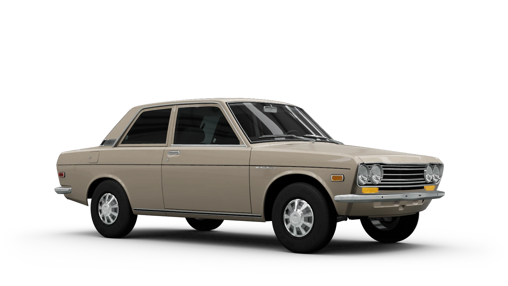

Dasar-Dasar Berkendara Mobil
- Memahami Kendaraan Anda
- Komponen Utama Mobil
- Mesin: Jantung mobil yang mengubah bahan bakar menjadi tenaga.
- Transmisi: Manual atau otomatis, mentransfer tenaga dari mesin ke roda.
- Rem dan Sistem Kemudi: Untuk menghentikan, memperlambat, dan mengarahkan mobil.
- Perawatan Rutin
- Memeriksa Oli: Penting untuk pelumasan mesin.
- Tekanan Ban: Menjaga efisiensi bahan bakar dan pengendalian stabil.
- Cairan Lainnya: Coolant, minyak rem, dan power steering.
- Posisi Duduk yang Benar
- Pengaturan Kursi: Agar nyaman dan dapat mengoperasikan kontrol dengan baik.
- Pengaturan Spion dan Sabuk Pengaman: Spion untuk pandangan jelas, sabuk pengaman harus dipakai dengan benar.
Berkendara Mobil Manual
- Teknik Mengemudi Manual
- Mengganti Gigi: Koordinasi pedal kopling dan tuas transmisi.
- Teknik Start dan Stop: Teknik kopling dan gas di tanjakan.
- Menghindari Kesalahan Umum
- Menghindari Stalling: Latihan untuk mencegah mesin mati.
- Menangani Over-revving: Hindari RPM tinggi yang berlebihan.

Berkendara Mobil Otomatis
- Cara Menggunakan Transmisi Otomatis
- Mode Transmisi: P, R, N, D.
- Teknik Mengemudi: Perhatikan akselerasi dan pengereman.
- Memahami Mode Berkendara
- Mode Berkendara Khusus: Eco, Sport, dan Snow untuk performa dan keselamatan.
Keselamatan Berkendara
- Teknik Mengemudi di Kondisi Cuaca Buruk
- Berkendara di Hujan: Jaga jarak aman, gunakan wiper kaca.
- Berkendara di Salju dan Kabut: Atur kecepatan, gunakan lampu kabut.
- Prosedur Darurat
- Menangani Kecelakaan: Tetap tenang, periksa kondisi, laporkan ke pihak berwenang.
- Situasi Darurat: Tindakan cepat untuk ban pecah atau kehabisan bahan bakar.